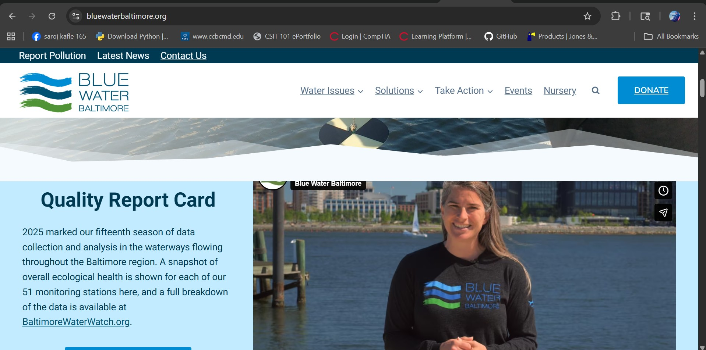

This is an assignment for CSIT 121 for Lab 06
In order to complete the assignment, I considered the following questions as instructed.
- Find a site to evaluate- For this assignment I choose the website of Blue Water Baltimore. This is a non profit organization for environment and water based on Baltimore.
- Explore and interact with the site to properly evaluate it- I have explored the website and understood that this website uses many of the html elements to present the content.
- Run the site through the Accessibility Checker- I ran Lighthouse and got 91/100
- Create a folder in your CSIT121 folder called lab06- The appropriate folder were created in the computer device and also upload to the git hub for sharing.
- Create an HTML file to communicate your evaluation- In the Visual Studio Code, I created the html file that runs this website.
- Write and markup your evaluation following the requirements below.
In my observation:
This is the website for water concerned citizens in Baltimore area where people advocate about clean water for strong communities.
It provides community with water and environmental information and also advocates about water quality in the city county area.
Members of this organization are fighting to keep water clean in Baltimore.
Some relevant information are:
A. Basic background-
i: The URL of the website is https://bluewaterbaltimore.org/
ii: The name of the website is "Blue Water Baltimore."
iii: Site targets water, environment and nature concerned citizens in Baltimore area.
iv. Site is managed and sponsored by the board of the organization while a company "Entrepreneur" is technical partner to manage the website of the company.
v. I found Contrast and Alignment as major CRAP design principle. The use of color and fonts makes is good contrast and alignment of content makes it more user friendly.
vi. The audit score is 91/100.
vii. The site is effective. I searched "water report" in the home page and it immediately showed relevant reports from the earlier years
viii. This looks like an efficient site. The "donate" section have efficiently maintained payment membership service.
ix. This is water based non-profit. The selection of blue, light blue and green color reflects the aesthetics of the industry.
x. The website uses the photo or static element as the content. A few videos in would be good. That's my recommendation.

This site has very high accessibility score: 91/100
Color and theme of the website is very suitable in compare for water based organization.
This site is very suitable to stay updated by reading the post and signing up for newsletter.
One recommendation I would add is to change static photos in the landing page to dynamic video to make landing page more attractive.
B. Technical description-
Header and footer section is very elaborative throughout the page.
Tabs in the navigation bar are well descriptive.
The search option in the navigation bar looks good.
Donate section have lots of content including billing information with suitable tags for text, number, contact etc.
C. Coding aspects-
Most of the html tags are well placed to make strong skeleton of the website
CSS have been wisely used to maintain the page attraction without making overly decorative.
Contents and styles are placed in suitable way.
i. Sufficient HTML tags
- Preview your file in VS Code using Live View- In this section I previewed the code as I typed on the right hand side of the pane
- Preview and test your file locally in a browser- I have tested the file in my Visual Studio code and it ran as normal, The published filed run successfully.
- Validate your file- The validation was done.
- Transfer the entire lab06 folder containing your site to your GitHub repository- The file from the local my personal computer was dragged and dropped to my git hub repository. Once the file was transferred, the updates in the file was noted
- Access your published site and test it. The process is duly carried.
- Share the URL (link) of your published file in the comment field for this assignment- The URL to the site is (this link will be produced only after publishing the page.)